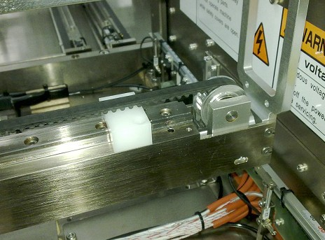
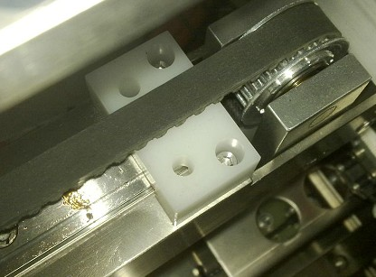
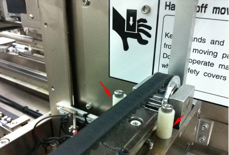
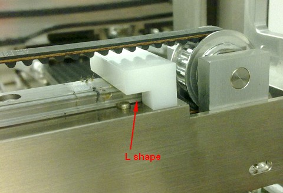

Service History
Subject: Difference of stopper for NS-8000 High UPH 8 Hands
Handler Model: NS-8000 High UPH 8 Hands
Controller: RC520
Date: 28 Oct 2011
Symptom
One of the 2 dowel pin for the mechanical reference of the x axis linear slide of input and output arm had been removed upon the upgrade due to the new limit hard stop not catering for that while the other 2 8XIO arm existing handler, H15-NS88 and H01-NS816 had been catered.
But I will still required your help to standardize as both handler is having difference limit hard stop. At the same time please help to ensure the above mentioned will not occurred on those 8XIO arm handlers that will be shipping to ASESG.
I had attached photo of new limit hard stop of H14-NS88 (removed from current position to expose the dowel pin hole) and that of H15-NS88 and H01-NS816 to show the difference in dimension.
Action
below e-mail by Imai-san to ASE to explain about difference of stopper for NS-8000 High UPH 8 Hands:
A) For the previously-made NS8000 series handler, there are two types of Stopper as below:
a) For 4 I/O hand: White-square shape, without hole (Please refer to attached photo “H14-NS88”.
But please disregard the position of the stopper in the photo. )

b) For 8 I/O hand: White-square shape, with hole (Please refer to attached photo “H15-NS88”)

B) For the newly-made NS8000 series handler, there are also two types of Stopper as below:
a) For 4 I/O hand: 2pcs of White pillar shape (Please refer to attached photo “photo of new stopper of 4IO Hand”)

b) For 8 I/O hand: White L-shape (Please refer to attached photo “H01-NS816”)

C) This time upgrading to 8 I/O hands, stopper of above A)b) was necessary, however, it was
not sent to ASES by mistake. Therefore we temporarily installed A) a).
A)b) for replacement will be sent to you soonest.
D) Difference between A)b) and B)b)
Stopper A)b) is longer than Stopper B)b).
Therefore, in order to keep the same stroke (movement area), different stopper should be used
for A) and B) machine.
Cause